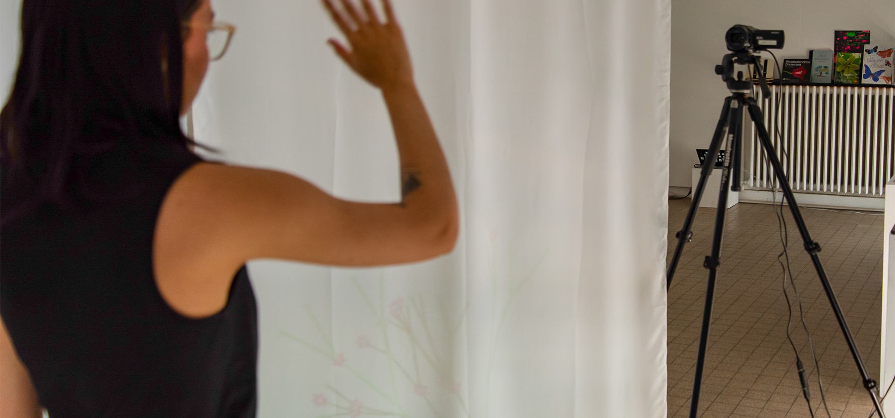
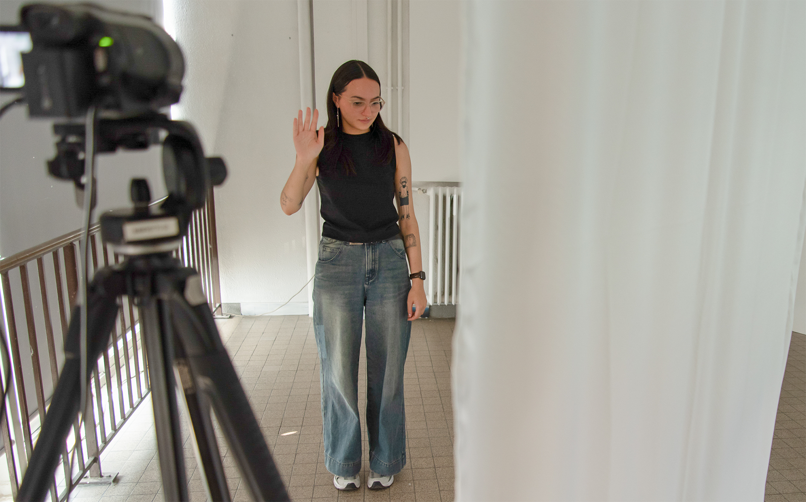
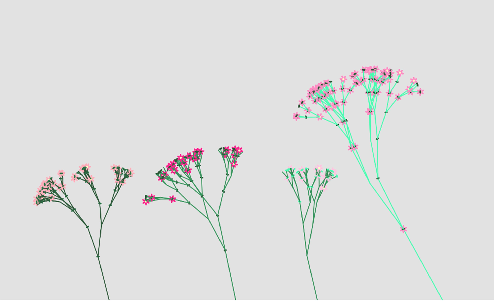

MediaPipe Hands, HTML, CSS, JavaScript
L’installation consiste en trois grands panneaux de tissu en arc de cercle, sur lesquels évoluent les Chromatophilacées. Observée de l’extérieur, elle montre un écosystème vivant, mais lorsqu’on entre au cœur de l’installation, nos gestes, détectés en 3D grâce à MediaPipe Hands, affectent les plantes : agiter les mains fait rétrécir les arbres, lever les bras fait tomber fleurs et feuilles. En cessant ces mouvements et en repassant derrière la barrière, les plantes reprennent vie, illustrant l’impact de notre présence sur cet espace végétal.
Cette installation a été conçue pour le diplôme DNSEP 2025 à l’ESAD Orléans.

